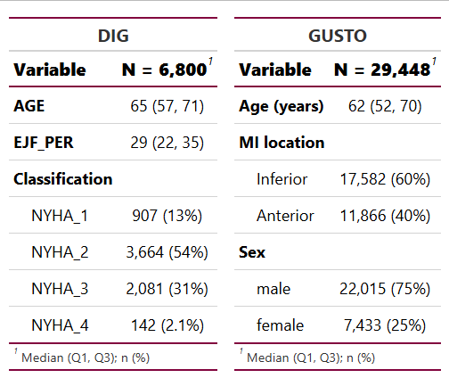
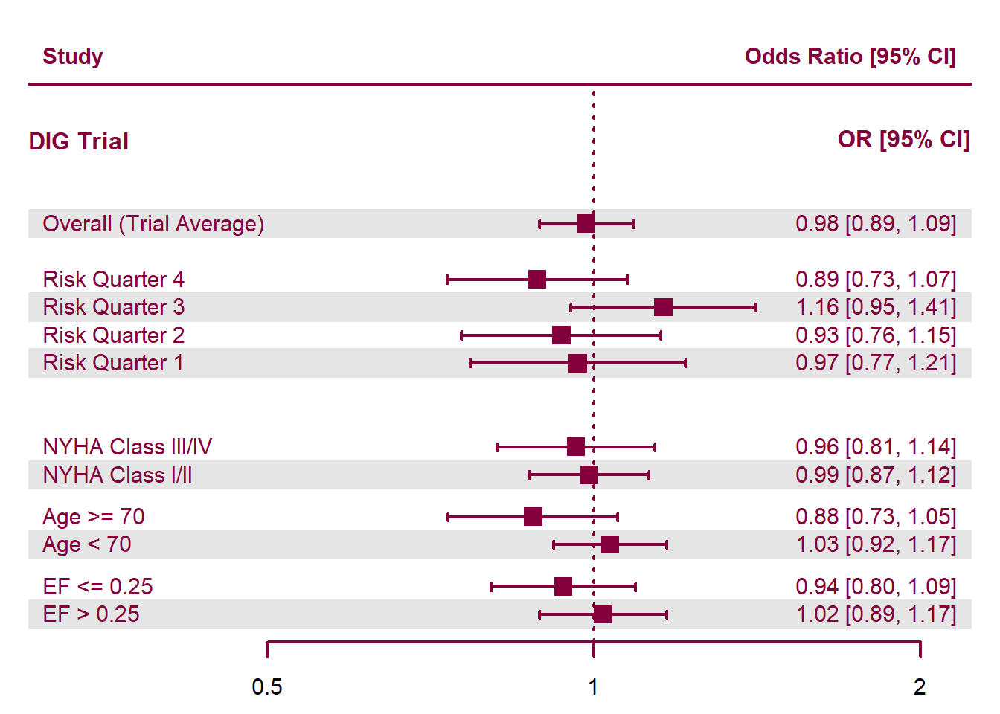
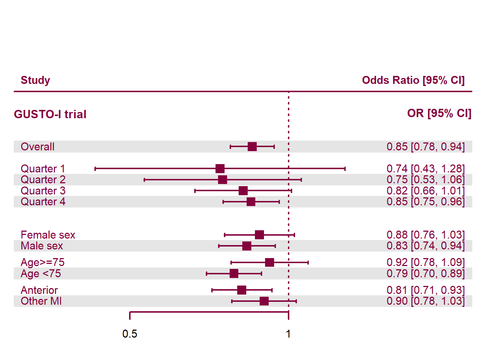
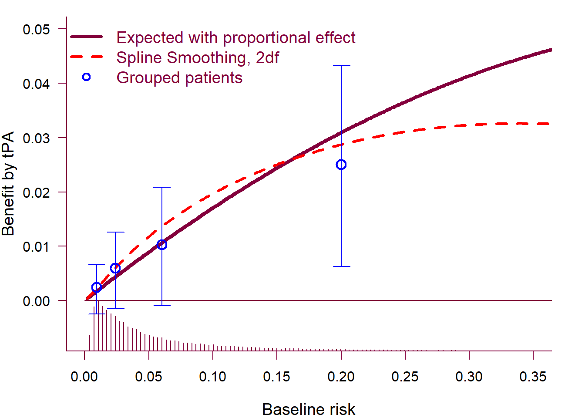

Predictive Approaches to Treatment Effect Heterogeneity
Tom Delany, Misgana Ojamo1
1 School of Mathematical and Statistical Sciences, University of Galway
Background
• Randomised controlled trials are typically reported in terms of average treatment effects. This assumes homogenous patient response and ignores patients differences in demographics, disease severity, and other contextual factors - termed patient Heterogeneity (HTE) 1, crucially, these factors may modify the effectiveness of treatment.
• Traditional subgroup analyses attempt to address HTE by examining one variable at a time (e.g Male vs Female). However, these analyses are frequently underpowered, suffer from high rates of false positives and miss multivariate treatment response patterns.
• Predictive Approaches to Treatment effect Heterogeneity (PATH) shift the focus to individualized prediction, modelling risk and treatment effects across individuals 2.
Objectives:
- Implement and evaluate predictive HTE models across multiple clinical datasets.
- Assess the clinical relevance and reporting implications of PATH analyses.
Our Trials
Analyses are based on published clinical trial data from the GUSTO-I trial (GUSTO) 3 and the Digitalis Investigation Group trial (DIG) 4, the characteristics of which are described below.
| Overview of GUSTO and DIG trials | ||
| Characteristic | GUSTO | DIG |
|---|---|---|
| Patients (n) | 41,021 | 6,800 |
| Treatments | Accelerated tPA vs Streptokinase (± heparin) | Digoxin vs Placebo |
| Years ran | 1989–1993 | 1991–1995 |
| Design | Open-Label | Double-blind, placebo-controlled |
| Follow-up | 30 days | 37 Months (mean) |
| Location | International - 15 Countries | USA - 302 Centres |
| Primary outcome | 30-day mortality | All-cause mortality |
Early Results

Figure 1: Key subgroups and their characteristics for DIG and GUSTO. MI - Myocardial Infarction, NYHA - New York Heart Association, EJF_PER - Ejection fraction (percent)
PATH Compatible Forest Plots
To evaluate how our effects stratified by baseline risk compare with effects observed in traditional subgroups, we generated the following forest plots for the DIG and GUSTO trials.

Figure 2: DIG Trial, Forest plot of treatment heterogeneity. Points represent odds ratios and horizontal lines indicate 95% confidence intervals.

Figure 3: GUSTO Trial. Forest plot of treatment heterogeneity. Points represent odds ratios and horizontal lines indicate 95% confidence intervals; the vertical line denotes no effect (OR = 1).
Absolute Benefit of Treatment by Baseline Risk
• Absolute treatment benefit from a main-effects model increases with baseline risk; the solid maroon curve shows expected risk reduction under a proportional treatment effect assumption.
• Proportional-effect and spline-smoothed (dashed red curve) approaches yield similar estimates of treatment benefit, indicating increasing absolute benefit with higher baseline risk.
• The histogram at the bottom of the plot shows substantial heterogeneity in baseline risk, concentrated in low risk values.

Figure 4: Absolute treatment benefit increases with baseline risk across estimates in the GUSTO trial.
Next Steps
We will conduct further analyses on the International Stroke Trial (IST) 5 and the National Lung screening Trial (NLST) 6, to evaluate the applicability of PATH across domains. We also plan to implement a machine-learning approach using causal forests for patient risk prediction. We will use the grf package for this.
| Overview of IST and NLST trials | ||
| Characteristic | IST | NLST |
|---|---|---|
| Patients (n) | 19,435 | 53,254 |
| Treatments | Factorial (± Heparin ± Aspirin) | CT screening vs. chest radiography |
| Years ran | 1991–1996 | 2002-2009 |
| Design | Open-Label | Randomized controlled trial |
| Follow-up | 14 days (early outcomes); 6 months (main) | Median 6.5 years |
| Location | International - 36 Countries | USA - 33 centres |
| Primary outcome | 14-day and 6 month mortality | Lung-cancer mortality |
GitHub
The code and datasets for this project can be viewed at our GitHub repository here: https://github.com/tomdelany04/PATH-Master/
References
Kent et al. 2020, doi: 10.7326/M18-3668↩︎
Willke et al. 2012, doi: 10.1186/1471-2288-12-185↩︎
The GUSTO investigators, 1993, doi: 10.1056/NEJM199309023291001↩︎
The Digitalis Investigation Group, Feb. 1997, doi: 10.1056/NEJM199702203360801↩︎
Sandercock et al., 2011, doi: 10.1186/1745-6215-12-101↩︎
The National Lung Screening Trial Research Team, 2011, doi: 10.1056/NEJMoa1102873↩︎